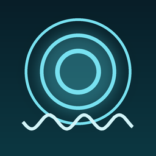

Wrist Suite
Six watch-first Apple Watch apps. Everything is computed on the wrist. No servers of ours, no accounts, no data collection — see each app's privacy page for exactly what (if anything) leaves the watch. / Altı saat-öncelikli uygulama. Her hesap bilekte yapılır. Bize ait sunucu yok, hesap yok, veri toplama yok — saatten ne çıktığını (çıkıyorsa) her uygulamanın gizlilik sayfası tek tek yazar.

Işık beklemez. Hazır ol.One-time purchase

Denizcinin bilek nöbetçisiOne-time purchase

Jet lag'i ışıkla yenOne-time purchase

Dönüş yolunu hep bilirOne-time purchase

Bilekte yavaş nefesOne-time purchase + optional Pro subscription

Düşünceyi anında yakalaOne-time purchase
GesturAir is not on the App Store. A seventh app, GesturAir, was built but is not
published. It required the watch to act as a Bluetooth LE peripheral, and watchOS does not support that role — the
build fails against the watchOS SDK. Its transport layer is being redesigned; there is no release date, and none is
being promised here. Status note: GesturAir status.
GesturAir App Store'da yayında değil. Yedinci uygulama GesturAir geliştirildi ama
yayınlanmıyor. Saatin Bluetooth LE peripheral rolünde çalışmasını gerektiriyordu; watchOS bu rolü desteklemiyor ve
uygulama watchOS SDK'sına karşı derlenmiyor. Taşıyıcı katmanı yeniden tasarlanıyor; yayın tarihi yok ve burada söz
verilmiyor. Durum notu: GesturAir durumu.
Press kit: icons · VagoTakt Terms of Use (EULA)
© 2026 Berke Kahraman · brkekahraman@icloud.com
{kind=link}